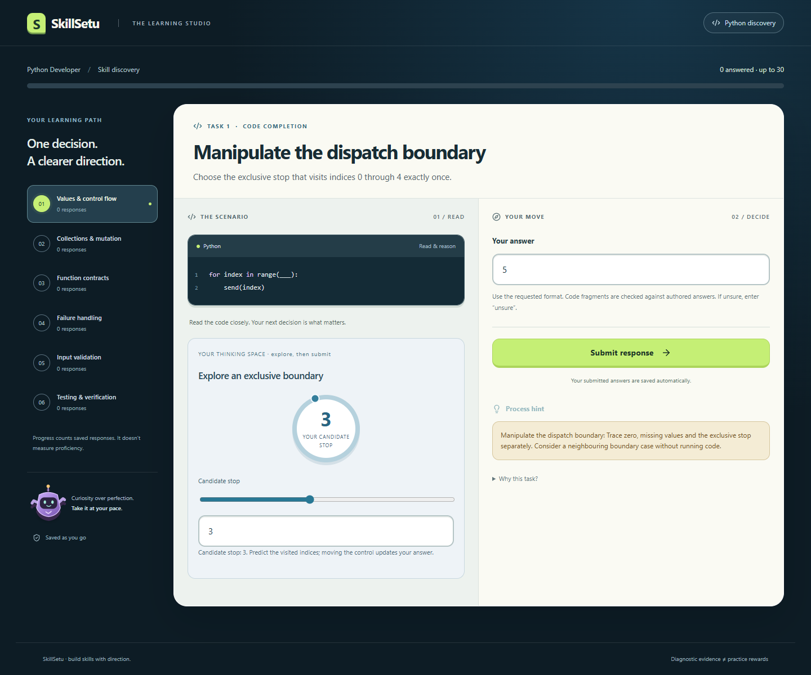
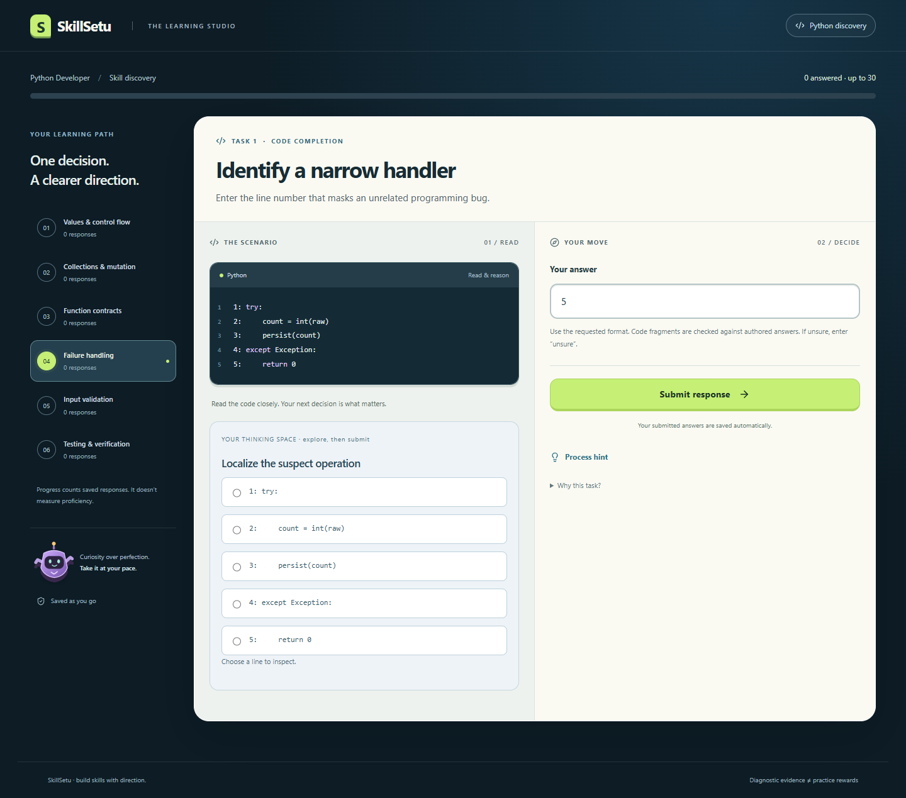
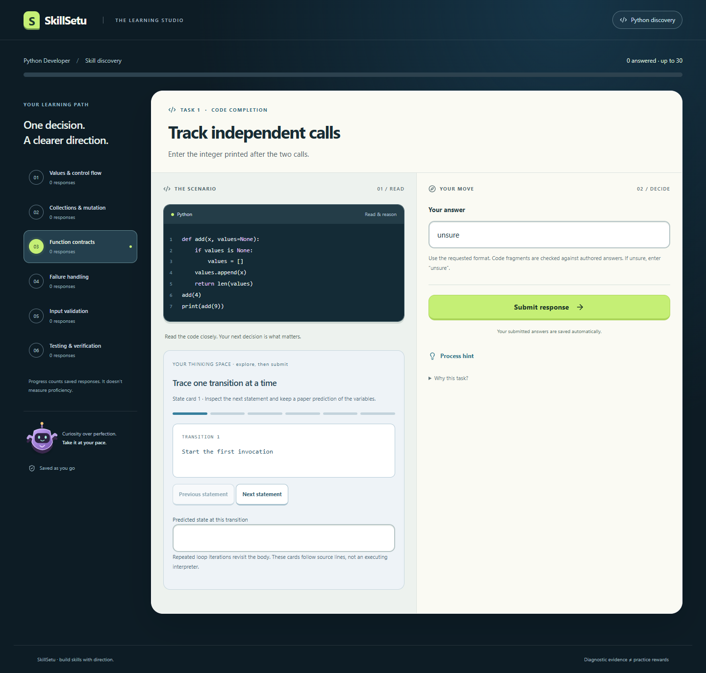
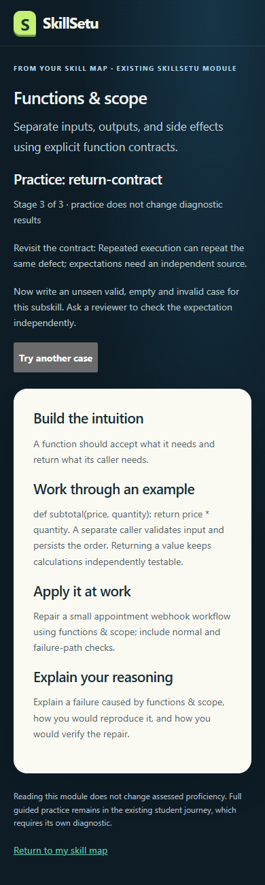
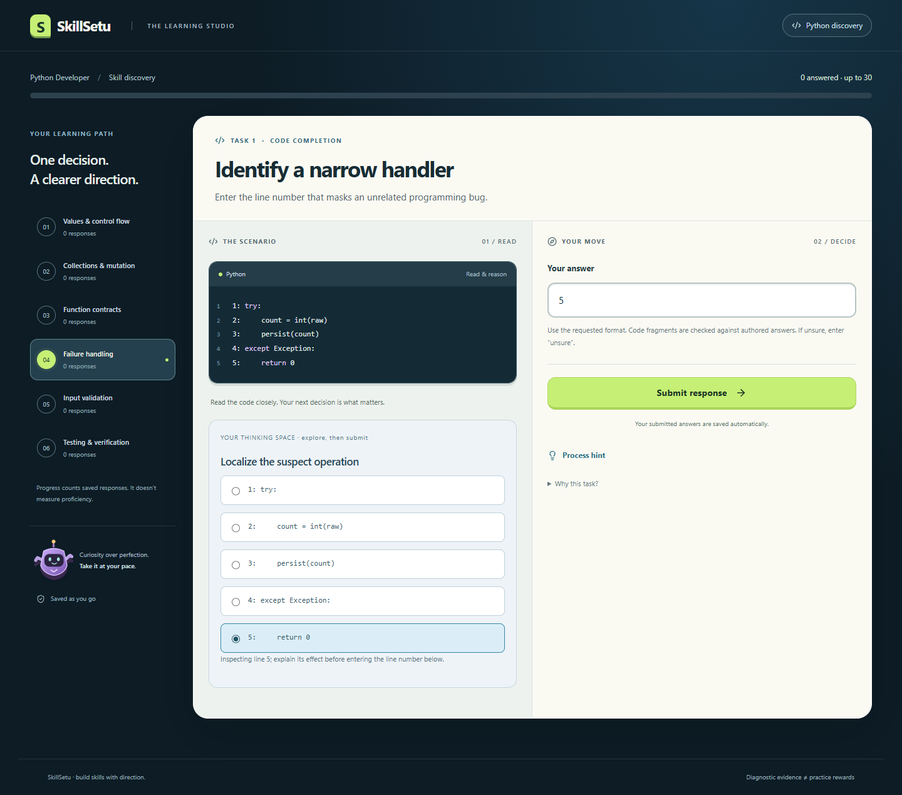

SKILLSETU / LOCAL AUDIT / 30 OCTOBER 2026Every item. Every visible choice.
Clear interaction evidence.
48 questions in isolated local Chromium sessions. Passing submission checks coexist with unresolved usability findings.
48/48questions exercised143/143submission cases passed9/9regression journeys passed0changes to 2,807 prior records Five reported issue classes: three reproduced refresh issues (six affected items), plus two visual/content observations. These findings remain unfixed.
Full methodology and limitations · Raw evidence · Recovery rerun · Download matrix
Prioritized findings
P2 · F1Boundary candidate resets while the saved answer survives
The restored answer is retained, but the dial, slider and numeric candidate reset to 3. The screenshot shows a saved answer of 5 alongside a candidate of 3.
Reproduce: Set Candidate stop to a value other than 3, wait for the draft to save, refresh, then Resume diagnostic.
Next step: Initialize/synchronize the candidate from the restored draft and keep a single source of answer state.
Show screenshot

Source-line choice loses its selected state on resume
The text answer is restored, but no source-line radio remains checked.
Reproduce: Select a source-line radio, wait for its answer draft to save, refresh and Resume diagnostic.
Next step: Derive the selected line from the saved draft, including updates made through the answer input.
Show screenshot

State-card scratch work is not restored
The answer persists, but transition notes and active state-card position reset.
Reproduce: Advance through state cards, enter scratch predictions, save the final answer, refresh and Resume diagnostic.
Next step: Persist per-transition scratch state separately, or disclose clearly that the thinking-space notes are temporary.
Show screenshot

The return-contract lesson still uses generic verification practice
The route displays Practice: return-contract, but its guided check falls through to the generic independent-expectation question instead of a return-value contract exercise. Both buttons work; all six modules are reachable.
Reproduce: Open the Functions module recommendation for return-contract; predict a case, compare the example, and exercise both practice options.
Next step: Give return-contract an explicit guided activity and review the other generic fallback routes for subskill alignment.
Show screenshot

Localized code displays two sets of line numbers
The code already contains authored 1:, 2: labels while the renderer adds its own gutter numbers. This was visually observed, not counted as a failed submission.
Reproduce: Inspect an error-location question before submitting.
Next step: Use one consistent presentation numbering layer without mutating published bank snapshots or grading line identifiers.
Show screenshot

Natural adaptive journeys
| Profile | Responses | Stop reason |
|---|
| strong | 18 | Minimum length and coverage met; repeated evidence is consistent across every competency. |
| struggling | 19 | Minimum length and coverage met; repeated evidence is consistent across every competency. |
| mixed | 30 | Maximum length reached; unresolved areas remain insufficient evidence. |
Item sweeps use explicit disposable fixtures; these three journeys use normal selection. The 30-question mixed run deliberately missed every third answer and differs from the earlier founder audit.
Question coverage
48 questions shown
| Question | Type / competency | Cases | Observation | Evidence |
|---|
| Trace a batch counterreview2-values-trace-1 | predictionvalues | 3/3 | No sweep observation | Screenshot |
| Choose a safe contractreview2-values-decision-1 | decisionvalues | 3/3 | No sweep observation | Screenshot |
| Trace the behaviourreview2-values-trace-2 | predictionvalues | 3/3 | No sweep observation | Screenshot |
| Repair the boundaryreview2-values-patch-2 | completionvalues | 3/3 | No sweep observation | Screenshot |
| Apply the contractreview2-values-patch-3 | completionvalues | 4/4 | No sweep observation | Screenshot |
| Plan a safe repairreview2-values-workflow-3 | orderingvalues | 2/2 | No sweep observation | Screenshot |
| Trace list growthreview2-collections-trace-1 | predictioncollections | 3/3 | No sweep observation | Screenshot |
| Choose a safe contractreview2-collections-decision-1 | decisioncollections | 3/3 | No sweep observation | Screenshot |
| Trace the behaviourreview2-collections-trace-2 | predictioncollections | 3/3 | No sweep observation | Screenshot |
| Repair the boundaryreview2-collections-patch-2 | completioncollections | 3/3 | No sweep observation | Screenshot |
| Apply the contractreview2-collections-patch-3 | completioncollections | 6/6 | No sweep observation | Screenshot |
| Plan a safe repairreview2-collections-workflow-3 | orderingcollections | 2/2 | No sweep observation | Screenshot |
| Trace a returned valuereview2-functions-trace-1 | predictionfunctions | 3/3 | No sweep observation | Screenshot |
| Choose a safe contractreview2-functions-decision-1 | decisionfunctions | 3/3 | No sweep observation | Screenshot |
| Trace the behaviourreview2-functions-trace-2 | predictionfunctions | 3/3 | No sweep observation | Screenshot |
| Repair the boundaryreview2-functions-patch-2 | completionfunctions | 3/3 | No sweep observation | Screenshot |
| Apply the contractreview2-functions-patch-3 | completionfunctions | 4/4 | No sweep observation | Screenshot |
| Plan a safe repairreview2-functions-workflow-3 | orderingfunctions | 2/2 | No sweep observation | Screenshot |
| Identify the exception class. Enter its Python name.review2-errors-trace-1 | predictionerrors | 3/3 | No sweep observation | Screenshot |
| Choose a safe contractreview2-errors-decision-1 | decisionerrors | 3/3 | No sweep observation | Screenshot |
| Trace the behaviourreview2-errors-trace-2 | predictionerrors | 3/3 | No sweep observation | Screenshot |
| Repair the boundaryreview2-errors-patch-2 | completionerrors | 3/3 | No sweep observation | Screenshot |
| Apply the contractreview2-errors-patch-3 | completionerrors | 3/3 | No sweep observation | Screenshot |
| Plan a safe repairreview2-errors-workflow-3 | orderingerrors | 2/2 | No sweep observation | Screenshot |
| Is an empty list truthy? Enter True or False.review2-validation-trace-1 | predictionvalidation | 3/3 | No sweep observation | Screenshot |
| Choose a safe contractreview2-validation-decision-1 | decisionvalidation | 3/3 | No sweep observation | Screenshot |
| Trace the behaviourreview2-validation-trace-2 | predictionvalidation | 3/3 | No sweep observation | Screenshot |
| Repair the boundaryreview2-validation-patch-2 | completionvalidation | 3/3 | No sweep observation | Screenshot |
| Apply the contractreview2-validation-patch-3 | completionvalidation | 3/3 | No sweep observation | Screenshot |
| Plan a safe repairreview2-validation-workflow-3 | orderingvalidation | 2/2 | No sweep observation | Screenshot |
| Trace an assertion. Enter True or False for the tested expression.review2-testing-trace-1 | predictiontesting | 3/3 | No sweep observation | Screenshot |
| Choose a safe contractreview2-testing-decision-1 | decisiontesting | 3/3 | No sweep observation | Screenshot |
| Trace the behaviourreview2-testing-trace-2 | predictiontesting | 3/3 | No sweep observation | Screenshot |
| Repair the boundaryreview2-testing-patch-2 | completiontesting | 3/3 | No sweep observation | Screenshot |
| Apply the contractreview2-testing-patch-3 | completiontesting | 3/3 | No sweep observation | Screenshot |
| Plan a safe repairreview2-testing-workflow-3 | orderingtesting | 2/2 | No sweep observation | Screenshot |
| Manipulate the dispatch boundaryreview2-values-parallel-loop-boundary | completionvalues | 3/3 | resume-control-desync | Screenshot |
| Step through a filtered counterreview2-values-parallel-state-cards | completionvalues | 3/3 | scratch-not-persisted | Screenshot |
| Locate the skipped neighbourreview2-collections-parallel-error-location | completioncollections | 3/3 | resume-localization-desync | Screenshot |
| Preserve an explicit missing valuereview2-collections-parallel-dictionary-default | completioncollections | 3/3 | No sweep observation | Screenshot |
| Track independent callsreview2-functions-parallel-state-cards | completionfunctions | 3/3 | scratch-not-persisted | Screenshot |
| Preserve caller orderingreview2-functions-parallel-return-contract | completionfunctions | 3/3 | No sweep observation | Screenshot |
| Identify a narrow handlerreview2-errors-parallel-error-location | completionerrors | 3/3 | resume-localization-desync | Screenshot |
| Trace failure cleanupreview2-errors-parallel-cleanup | completionerrors | 3/3 | No sweep observation | Screenshot |
| Reject boolean quantitiesreview2-validation-parallel-exact-type | completionvalidation | 3/3 | No sweep observation | Screenshot |
| Guard a batch limitreview2-validation-parallel-range-check | completionvalidation | 3/3 | No sweep observation | Screenshot |
| Choose an independent empty-case expectationreview2-testing-parallel-boundary | completiontesting | 3/3 | No sweep observation | Screenshot |
| Locate the circular expectationreview2-testing-parallel-error-location | completiontesting | 3/3 | resume-localization-desync | Screenshot |
Scope and honesty
Entry, every displayed decision choice, all authored accepted formats, unsure/mismatch, ordering controls, exploration, hints, draft/resume, feedback, report links/restarts, all six guided modules and recovery buttons were exercised. Workflow permutations and free-text strings are not infinitely exhaustive. Not all 48 items were tested at both viewport sizes.
The first recovery check hit a test-locator ambiguity with Next's route announcer. The corrected targeted recovery rerun passed; the original event remains in the raw log. No uncaught page errors were captured. The current audit did not rerun unit tests or rebuild product code.
No application code, schema, bank, production data or deployment changed. Existing attempts were left intact. This is authored-contract verification, not educator sign-off or psychometric validation. Cross-browser, full screen-reader and load certification remain outside scope.
Source 0fd0039 · Build rBmPQ5IUTOoBkEL_leYfi · Edge 156.0.4314.50 · local skillsetu_audit · production parity not inspected